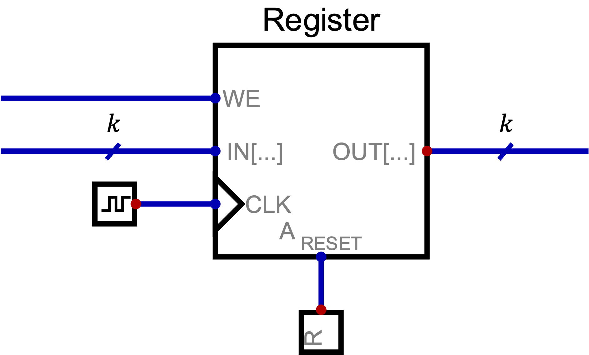

Definizione - Integrato notevole 244 - Driver 3-state a \( 8\) bit
L'integrato notevole 244 è l'equivalente di \( 8\) driver 3-state paralleli ma, a differenza dei singoli componenti, sono presenti solo due ingressi di OE che "piloteranno" \( 4\) bit ciascuno.
Tale integrato sarà quindi composto, oltre che dai due ingressi di ENABLE, da \( 8\) ingressi e \( 8\) uscite.
Tale integrato sarà quindi composto, oltre che dai due ingressi di ENABLE, da \( 8\) ingressi e \( 8\) uscite.
Definizione - Integrato notevole 245 - Driver 3-state bidirezionale a \( 8\) bit
L'integrato notevole 245 è un driver 3-state bidirezionale composto da \( 8\) "celle" del tipo  In base al valore dell'ingresso DIR, si avrà che un certo ingresso/uscita sarà attivo mentre l'altro sarà bloccato (quindi sarà possibile la comunicazione da A a B e da B ad A).
In base al valore dell'ingresso DIR, si avrà che un certo ingresso/uscita sarà attivo mentre l'altro sarà bloccato (quindi sarà possibile la comunicazione da A a B e da B ad A).
Il segnale di EN si presenta solitamente negato (EN') e permette di creare l'impedenza in entrambi i sensi.
Il segnale di EN si presenta solitamente negato (EN') e permette di creare l'impedenza in entrambi i sensi.
Definizione - Integrato notevole 373 - Latch a \( 8\) bit con uscita 3-state
L'integrato notevole 373 è l'equivalente di \( 8\) Latch CD sulla cui uscita è posto un driver 3-state.
Tale integrato sarà quindi composto, oltre che dagli \( 8\) ingressi di dato e le \( 8\) uscite anche da un ingresso C (condiviso) e un segnale per abilitare l'uscita (condiviso) solitamente negato (OE').
Tale integrato sarà quindi composto, oltre che dagli \( 8\) ingressi di dato e le \( 8\) uscite anche da un ingresso C (condiviso) e un segnale per abilitare l'uscita (condiviso) solitamente negato (OE').
Definizione - Registro edge-triggered a \( k\) bit
Un registro a \( k\) bit è una rete sequenziale sincrona in grado di memorizzare un dato di \( k\) bit. Esso è caratterizzato da: 

- un ingresso CLK per il segnale di clock;
- un bus di \( k\) segnali sincroni in ingresso IN[\( k-1, \ldots, 0\)];
- un ingresso sincrono WE ("Write Enable") per permettere la sovrascrittura del dato precedentemente memorizzato (con WE = 0 ad ogni fronte di clock rimane il segnale memorizzato in precedenza);
- un segnale asincrono A_RESET ("Asynchronous RESET") che, se attivo, pone a \( 0\) tutti i bit memorizzati.
- se WE = 1, il flip-flop deve memorizzare l'ingresso IN;
- se WE = 0, il flip-flop deve memorizzare il valore precedente, ovvero Q.
Definizione - Integrato notevole 374 - Registro edge-triggered a \( 8\) bit con uscita 3-state
L'integrato notevole 374 è l'equivalente di un registro edge-triggered a \( 8\) bit sulla cui uscita è posto un driver 3-state.
Tale integrato sarà quindi composto, oltre che dagli \( 8\) ingressi di dato e le \( 8\) uscite anche dal segnale di clock CK anche da un ingresso per abilitare l'uscita solitamente negato (OE').
Tale integrato sarà quindi composto, oltre che dagli \( 8\) ingressi di dato e le \( 8\) uscite anche dal segnale di clock CK anche da un ingresso per abilitare l'uscita solitamente negato (OE').